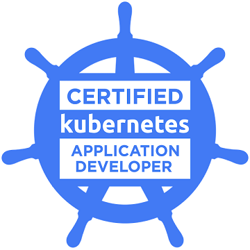
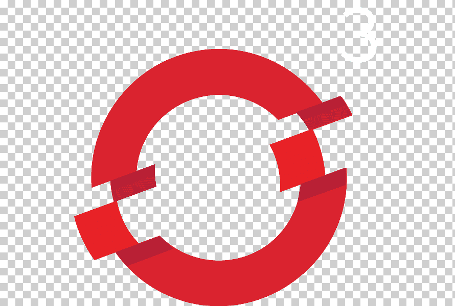
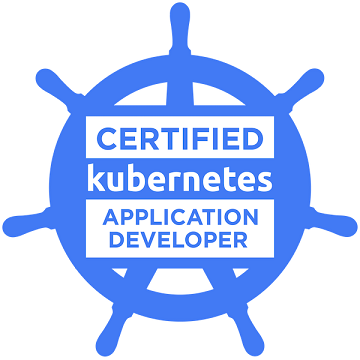
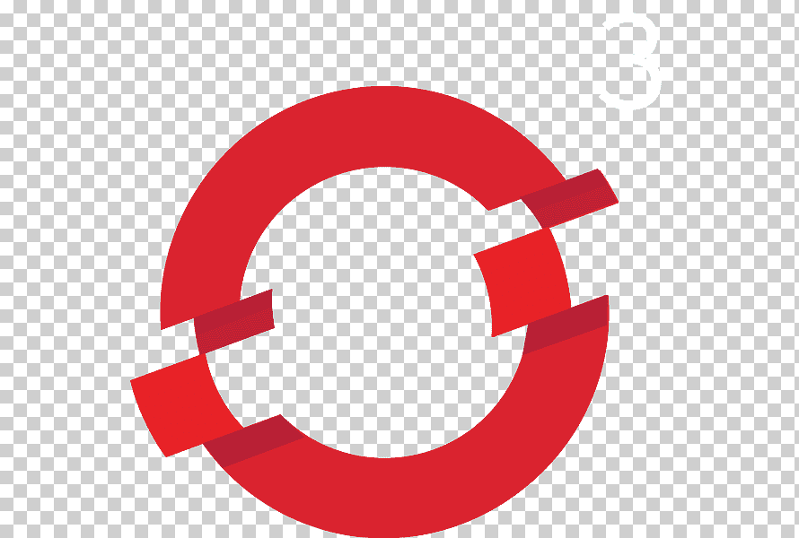

Vijay Vishwakarma
Consultant and architect in Kubernetes, DevOps and public cloud (AWS & Azure). My expertise and area of work is DevOps engineering,Cloud and kubernetes consulting, Product development. I am having 14+ Years of experience in IT. I believe in sharing of knowledge to make IT world better. I am writing blogs on several plateform. I am a Corporate trainer on kubernetes and Azure topics.
Proffesional employment:
I am working in a very good MNC company. I am playing a role of technical team lead and individual contributer both, within the team. i am part of all major team building activities, to project onboarding to product development. I am leading techinical the vodafone group innovation lab as well. Extensive working in kubernetes, openshift devops infra as a code product development project onboarding and solutioning. Some of my major contributions as solutioning part is to evolve kubernetes as a service product develompment for both onprem and public cloud.I am technically very good in logical designing and solutioning as well as troubleshooting. i have good knowaledge in kubernetes, docker terraform ansible, cicd , scm, openshift, virtulization microservices and public cloud, all three public but extensivly in aws and azure.
You can find few of my git repo at: github.com/sharmavijay86
Technologies i worked on :
Operating systems :- Redhat, Ubuntu, Centos, PhotonOS, CoreOS.
Tools : Docker, Kubernetes, Openshift, GIT, Jenkins, Nagios, GitLab.
Services : OpenLdap, DNS, DHCP, nginx, apache, multipath, LVM, network, kernel.
Software defined storage: Ceph, Gluster, OpenSource CNS (CSI).
Virtualization : Redhat KVM, VMWare.
Automation : Unix Shell, Ansible and python.
IaaC : Terraform, CloudFormation, Azure ARM
Mail servers : Postfix, Zimbra
DataBase : MySql,Oracle
Version control : GIT
I am certified in :
- Certified Kubernetes Administrator
- Certified Kubernetes Application developer
- Certified Kubernetes Security specialist
- Redhat Certified System Administrator
- Redhat Certified System Engineer
- Red Hat Certified Specialist in Openshift Administration
- Red Hat Certified Specialist in Ansible Automation
- Red Hat Certified Specialist in Server Security and Hardening
- Red Hat Certified Specialist in Openstack Administration
- Docker Certified Associates
- Star Certified in python programming
- Vmware certified Proffesional
- Amazon certified solution architect
- Azure certified solution architect
I am reachable here at :
Email : vijay@mevijay.com
Mobile: +91 7608000889
Web : www.mevijay.com